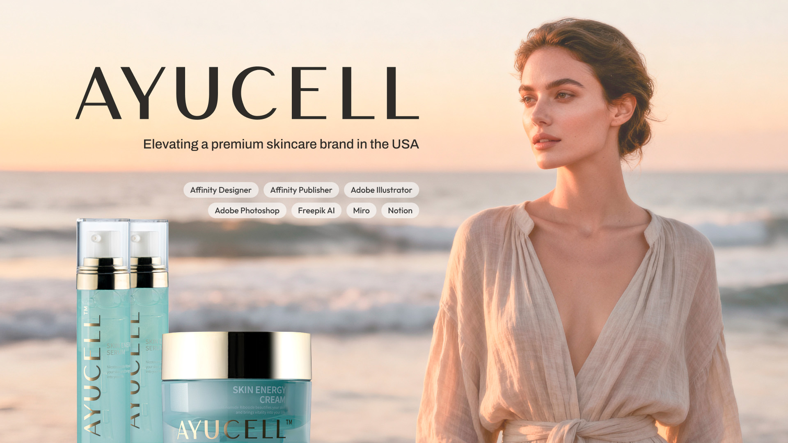
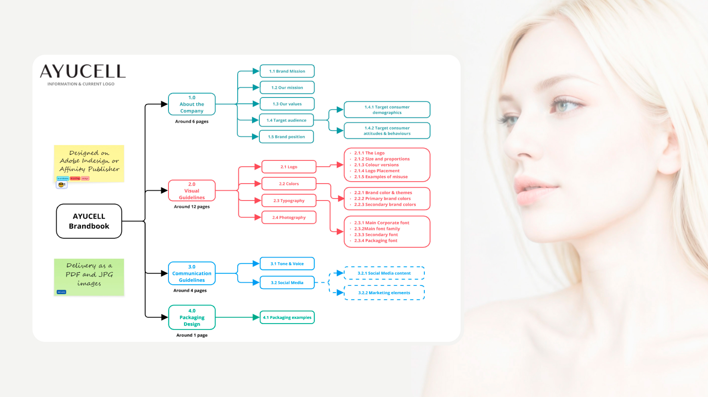
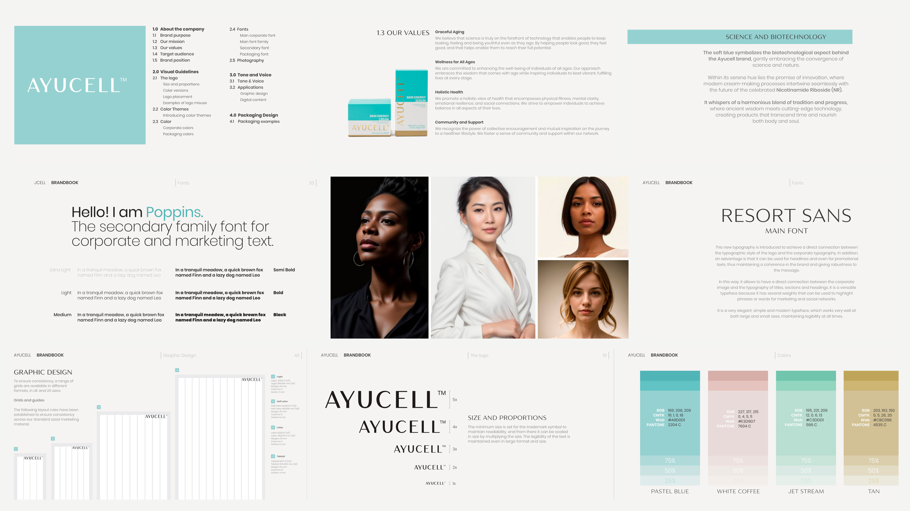
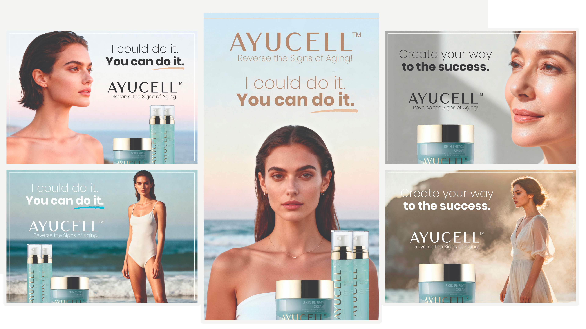
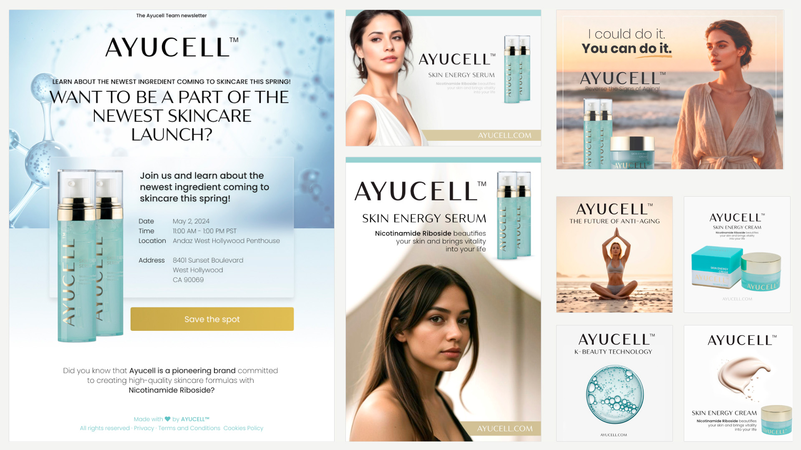

03 — Branding · Graphic Design
Ayucell
A new luxury skincare line built on South Korean technology was entering the competitive US market — aimed at successful women over 30 — with a logo and a product range, but no defined brand system, voice or visual language.

Overview
Ayucell is a luxury cosmetic line built around Korean skincare technology, entering the US market with a clear target — successful women over 30 — but no defined brand voice or visual language yet.
That lack of clarity was the real risk: without it, a genuinely premium product could easily land looking confusing or unprofessional next to established competitors. I worked directly with the client in California, in English.
Challenge
- 01A logo and product line existed, but no brand system around them — colour, typography use, imagery and voice all had to be defined.
- 02The brand needed to read as credible and premium to a discerning US audience from the very first touchpoint.
- 03Launch required a wide spread of materials — print, digital, packaging and social — all needing to feel like one brand.
- 04The technical story (Nicotinamide Riboside, Korean biotech) had to translate into language that felt aspirational, not clinical.
Process
Ayucell needed a complete visual and verbal structure around its existing logo — a full Brand Book and detailed Brand Guidelines that would define its personality, not just its rules.
The client wanted to keep the logo. I recommended refining its typography, which was attractive but not fully professional for a logo; they chose to keep it, so I built the system around the existing mark. I also created a first set of AI-generated images and wrote the criteria for producing new ones, so the team could carry on its marketing and content on its own.
Brand book architecture
Before designing a page, I mapped the whole brand book: about the company (around 6 pages), visual guidelines (around 12), communication (around 4) and packaging — designed in InDesign and Affinity Publisher and delivered as PDF and JPG.

Identity system
Logo sizes and proportions, a palette of Pastel Blue, White Coffee, Jet Stream and Tan, Resort Sans as the main typeface with Poppins as the secondary one, plus photography direction and graphic-design grids.

One brand system, from logo rules to launch day.
Voice in action
The brand voice applied to the campaign — “I could do it. You can do it.” and “Create your way to the success.” — adapted across vertical, horizontal and social formats with AI-generated imagery.

Launch materials
An event-invitation newsletter, serum and cream banners, and square social posts on skincare, K-beauty technology and wellbeing — one consistent look across email, web and Instagram.

Solution
A single, coherent brand vision — logo, colour, typography, voice and tone — backed by a full suite of launch marketing assets, so every touchpoint felt like the same premium brand from day one.
Impact